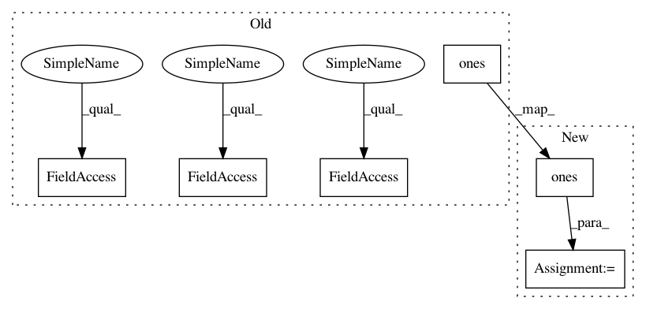

9613c71f24b8f3f289fcbace86be57dcc66360ed,mne/channels/interpolation.py,,_make_interpolation_matrix,#Any#Any#Any#,60
Before Change
G_from.flat[::len(G_from) + 1] += alpha
n_channels = G_from.shape[0] // G_from should be square matrix
C = np.r_[np.c_[G_from, np.ones((n_channels, 1))],
np.c_[np.ones((1, n_channels)), 0]]
C_inv = linalg.pinv(C)
interpolation = np.c_[G_to_from,
np.ones((G_to_from.shape[0], 1))].dot(C_inv[:, :-1])
return interpolation
After Change
if alpha is not None:
G_from.flat[::len(G_from) + 1] += alpha
C = np.vstack([np.hstack([G_from, np.ones((n_from, 1))]),
np.hstack([np.ones((1, n_from)), [[0]]])])
C_inv = linalg.pinv(C)
interpolation = np.hstack([G_to_from, np.ones((n_to, 1))]) @ C_inv[:, :-1]
assert interpolation.shape == (n_to, n_from)
In pattern: SUPERPATTERN
Frequency: 3
Non-data size: 6
Instances
Project Name: mne-tools/mne-python
Commit Name: 9613c71f24b8f3f289fcbace86be57dcc66360ed
Time: 2020-07-20
Author: larson.eric.d@gmail.com
File Name: mne/channels/interpolation.py
Class Name:
Method Name: _make_interpolation_matrix
Project Name: mne-tools/mne-python
Commit Name: 9613c71f24b8f3f289fcbace86be57dcc66360ed
Time: 2020-07-20
Author: larson.eric.d@gmail.com
File Name: mne/channels/interpolation.py
Class Name:
Method Name: _make_interpolation_matrix
Project Name: ysig/GraKeL
Commit Name: de35f42a16796d9aab141dd944d79b1d97cec350
Time: 2018-08-23
Author: y.siglidis@gmail.com
File Name: grakel/kernels/random_walk.py
Class Name: RandomWalk
Method Name: pairwise_operation
Project Name: deepchem/deepchem
Commit Name: ec30c1451474433f77b2caa609f04e6688965c1e
Time: 2020-07-19
Author: shak360@gmail.com
File Name: deepchem/models/tests/test_layers.py
Class Name: TestLayers
Method Name: test_cosine_dist